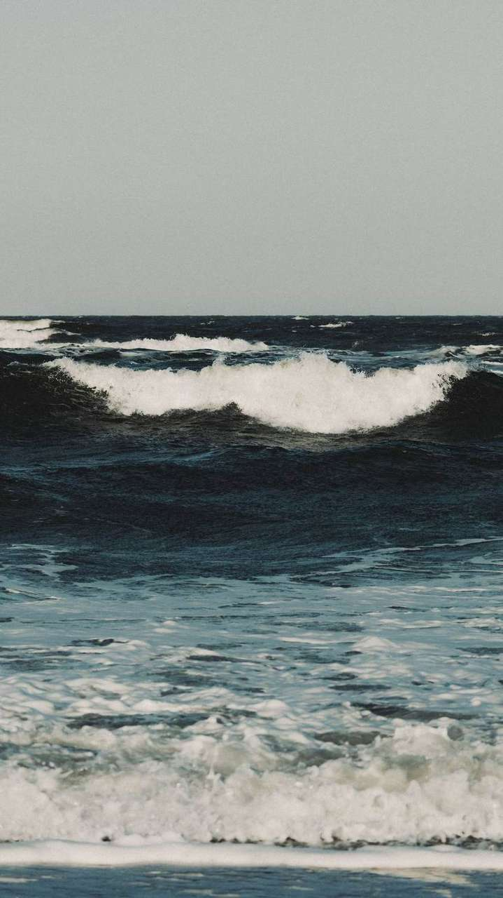
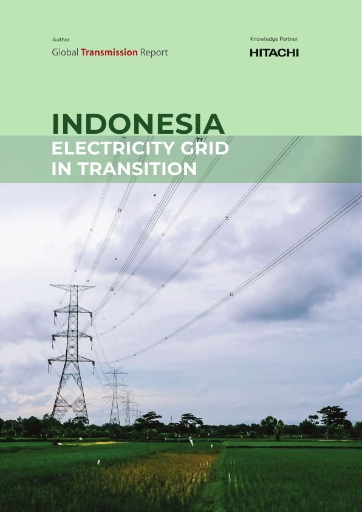

Seventeen thousand islands, one grid question
Indonesia wants to grow faster than almost any large economy on earth. It cannot do that on the power system it has today.
Most countries build a grid across land. Indonesia has to build one across water, between thousands of islands, for a population of around 280 million people who are about to use a great deal more electricity.
The government's ambition is to lift economic growth from about five per cent in 2025 to eight per cent by 2029. Growth like that runs on power. The national utility expects total electricity consumption to rise by roughly 67 per cent by 2034.
Starting from coal
The honest starting point is that coal makes up around 54 per cent of Indonesia's installed capacity, and much of that fleet is young, with decades of working life ahead. That makes the transition harder than in countries whose coal plants were due to close anyway, and it is why the country's targets are so steep.
Renewables supplied about 14.7 per cent of primary energy in 2024. The plan is 19 to 23 per cent by 2030 and 70 to 72 per cent by 2060, drawing on the solar, geothermal and wind resources the islands have in abundance.

What the next decade has to build
The numbers are concrete. Plans call for 42.6 gigawatts of new renewable capacity by 2034, about 61 per cent of everything that will be added. Connecting that across islands means long subsea links, and it is exactly what high-voltage direct current was invented to do: move large amounts of power over long distances and under water with very little lost on the way.
It also means the less visible work. Grids that stay stable when the sun sets on one island while the wind rises on another. Networks that reach communities that have waited longest. This is where the Frontiers theme of The Next 25 stops being an idea and becomes a map.
Linking the islands
The first big piece is already moving. The Sumatra–Java interconnection will use HVDC to carry electricity between the two most populous islands, the kind of link that lets a country treat its islands as one system instead of many.
Hitachi Energy pioneered HVDC seventy years ago and builds the links that join Shetland to Scotland, Tasmania to Victoria and, soon, Europe to North Africa. Indonesia is the same problem at a scale few countries have attempted. Which is precisely why it matters.

Indonesia: Electricity Grid in Transition
The full report on Indonesia's grid transformation: the growth it has to serve, the coal it starts from and the renewable build it has planned.